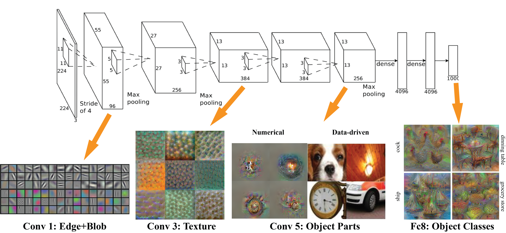
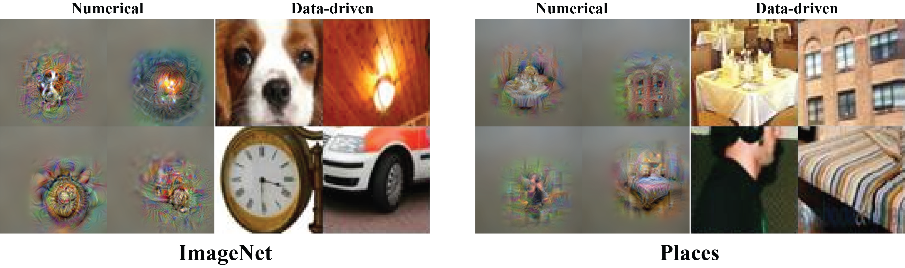
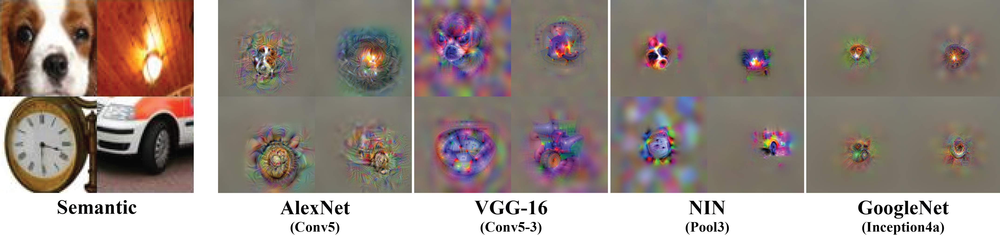
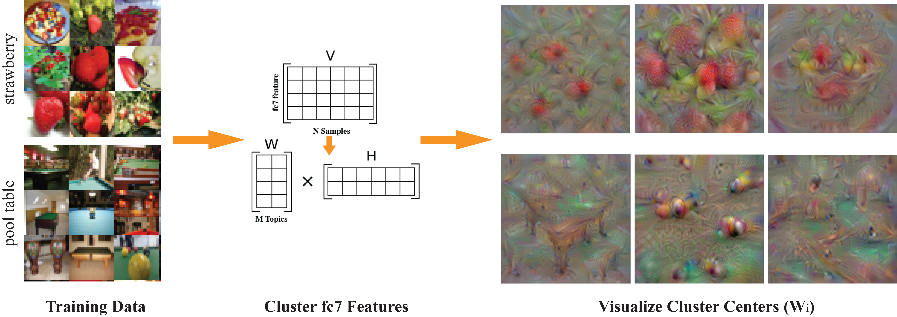
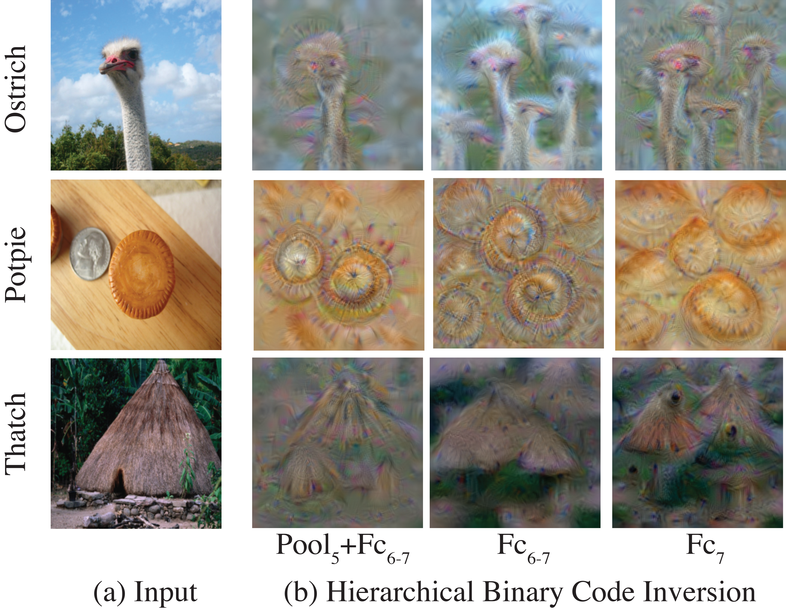

mNeuron: A Matlab Plugin to Visualize Neurons from Deep Models
Donglai Wei
Bolei Zhou
Antonio Torralba
William T. Freeman
{donglai, bzhou}@csail.mit.edu {torralba, billf}@mit.edu
Massachusetts Institute of Technology
Content:
-
Code: visualize neurons trained from deep learning packages through backpropagation optimization [support Caffe and matconvnet]
- Demo
- Reference
- The visualization method is modified upon "Mahendran and Vedaldi. Understanding Deep Image Representations by Inverting Them" [pdf, code]
- Documentation (draft)
'
Demo 1: Visualize A Single Neuron (V_neuronInv.m)
Goal: Find an image that optimize the activation of a single neuron [Erhan et al., Simonyan et al., Zhou et al.]
a. Different Layers: (
AlexNet) We visualize Conv1,3,5 neurons learned from ImageNet dataset. With the increasing layer depth, neurons are learned to recognize from simple edge/blob and texture pattern to complex object parts and class. (For Conv 5, we retrive real images for comparison with Zhou et al.)

b. Tessellation Art:
(GoogleNet)
Instead of optimizing the activation of a single neuron in 1x1 receptive field, we extend the receptive field to the full extent (14x14 for GoogleNet inception4a). Below, we manually organize the visualization results of some neurons, which tessellate the object parts into artistic wallpapers
c. Different Dataset: (
AlexNet) We visualize Conv4-5 neurons learned from two different datasets: ImageNet and Places.

d. Different Networks:
(
AlexNet,
VGG-16,
NIN,
GoogleNet)
Given four semantic patches "dog, fire, clock and wheel", we visualize the top-activated neurons in roughly aligned layers (right before Fc layers) from four different Networks.

More Results
'
Demo 2: Visualize Intra-class Variation
Intra-class Variation:
Given training images of an object class, we cluster Fc neuron responses to find common neuron firing patterns (neuron pathway). For each pattern, we choose top-k activated neurons and numerically find an image that optimizes the total activation of these neurons

'
Demo 3: Visualize Binary CNN Code
Given an input image, we can define its binary code as its relu masks m
5-7.
[
Agrawal et al.] points out that these binary code achieve similar classification result
as the original deep features.
We here consider three different binary code with increasing length: m
7, m
6-7, m
5-7.
To visualize the binary codes of an image,
we do the same "single-neuron visualization" for its Fc8 label,
except applying the additional binary code after the original relu layers during the optimization.
With more layers of binary code, we can recover the essence of the orignial image,
which partially explain its effectiveness for classification.

'
Demo 4: Image Completion with CNN (V_inpaint.m)
Details see Sec 5.3 in the documentation.
The gist is that we can do the neuron visualization (either single neuron or neuron pattern) with boundary constraints on the image.
'